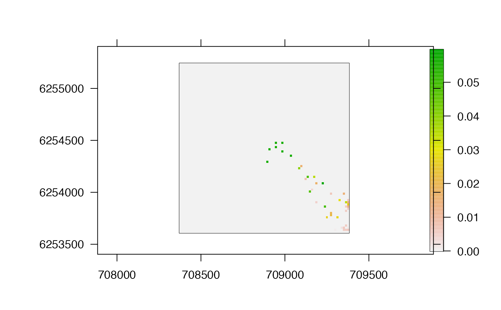
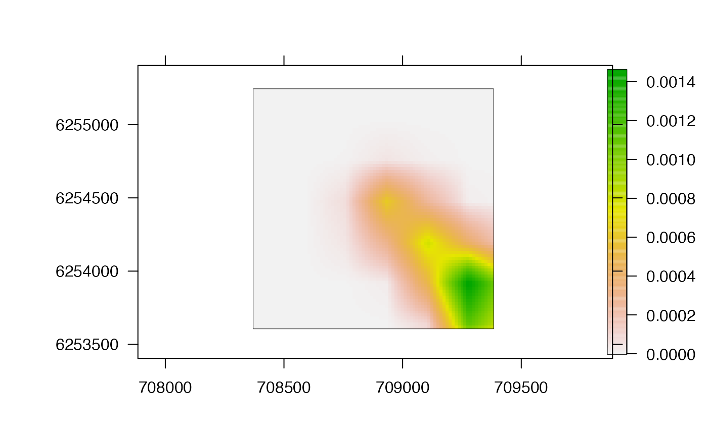
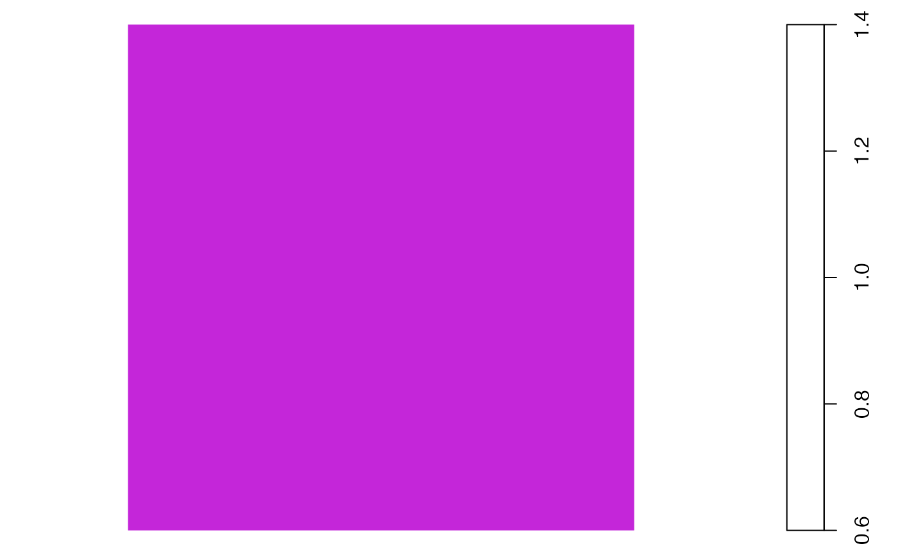

This function smooths proportion-of-use (POU) maps (from pf_plot_map) by applying kernel utilisation distribution (KUD) estimation. Depending on the implementation, following optional initial time trials, using a subset, all or an expanded sample of POU locations, the function applies a KUD smoother via a user-supplied estimation routine (i.e., kernelUD or kud_around_coastline). The function extracts the KUD as a raster, applies a spatial mask (e.g., coastline), plots the processed KUD (if specified) and returns this as a raster.
pf_kud( xpf, sample_size = NULL, estimate_ud = adehabitatHR::kernelUD, grid, ..., trial_cells = list(), trial_grids = list(), mask = NULL, plot = TRUE, verbose = TRUE )
| xpf | A POU |
|---|---|
| sample_size | (optional) An integer expansion factor for the number of locations used for KUD estimation. If supplied, \(n\) locations are randomly sampled from |
| estimate_ud | A function (either |
| grid, ... | Arguments passed to |
| trial_cells, trial_grids | (Optional) Lists that define the numbers of locations (cells) and the grids used for time trials. If either |
| mask | (optional) A spatial mask (see |
| plot | A logical input that defines whether or not to plot the KUD. |
| verbose | A logical input that defines whether or not to print messages to the console to monitor function progress. |
The function (a) plots the outcomes of time trials (if requested), (b) estimates and plots a KUD (if requested) and (c) returns a raster of the KUD.
For computational efficiency, it may be necessary to aggregate (and renormalise) POU scores across the grid used for estimation before implementing this function.
Edward Lavender
#### Define POU map for examples out_dcpf_s <- pf_simplify(dat_dcpf_histories, summarise_pr = TRUE, return = "archive")#> flapper::pf_simplify() called (@ 2022-06-17 10:06:51)... #> ... Getting pairwise cell movements based on calc_distance = 'euclid'... #> ... ... Stepping through time steps to join coordinate pairs... #> ... ... Identifying connected cells... #> ... ... Processing connected cells for return = 'archive'... #> ... flapper::pf_simplify() call completed (@ 2022-06-17 10:06:52) after ~0 minutes.#>#### Example (1): Implement function using default options pf_kud(xpf = out_dcpf_pou, grid = 10)#> flapper::pf_kud called (@ 2022-06-17 10:06:52)... #> ... Setting up function...#>#> ... Getting POU scores... #> ... .... POU scores extracted for 41 locations... #> ... Building SpatialPointsDataFrame... #> ... Implementing KUD estimation based on 41 cells... #> ... Processing KUD(s)... #> ... Plotting KUD...#>#### Example (2): Implement function using resampling pf_kud(xpf = out_dcpf_pou, sample_size = 100, grid = 10)#> flapper::pf_kud called (@ 2022-06-17 10:06:52)... #> ... Setting up function...#>#> ... Getting POU scores... #> ... .... POU scores extracted for 41 locations... #> ... Sampling cells... #> ... ... POU locations expanded to 4100 locations... #> ... Building SpatialPointsDataFrame... #> ... Implementing KUD estimation based on 4100 cells... #> ... Processing KUD(s)... #> ... Plotting KUD...#>#### Example (3): Implement time trials if(interactive()){ # Implement time trials for specified numbers of cells pf_kud(xpf = out_dcpf_pou, sample_size = 100, grid = 60, trial_cells = list(10, 100, 1000, 10000)) # Implement time trials for specified grids pf_kud(xpf = out_dcpf_pou, sample_size = 100, grid = 180, trial_grids = list(60, 120, 180)) # Implement time trials for specified numbers of cells and grids pf_kud(xpf = out_dcpf_pou, sample_size = 100, grid = 10, trial_cells = list(10, 100, 1000, 10000), trial_grids = list(10, 30, 60)) } #### Example (4): Force alignment between POU scores and grids for speed # Example with numeric grid out_dcpf_pou_agg <- raster::aggregate(out_dcpf_pou, fact = 2) out_dcpf_pou_agg <- out_dcpf_pou_agg/raster::cellStats(out_dcpf_pou_agg, "sum") grid <- raster::res(out_dcpf_pou_agg)[1] pf_kud(out_dcpf_pou_agg, grid = grid)#> flapper::pf_kud called (@ 2022-06-17 10:06:52)... #> ... Setting up function...#>#> ... Getting POU scores... #> ... .... POU scores extracted for 31 locations... #> ... Building SpatialPointsDataFrame... #> ... Implementing KUD estimation based on 31 cells... #> ... Processing KUD(s)... #> ... Plotting KUD...#>pf_kud(out_dcpf_pou_agg, grid = grid)#> flapper::pf_kud called (@ 2022-06-17 10:06:52)... #> ... Setting up function...#>#> ... Getting POU scores... #> ... .... POU scores extracted for 31 locations... #> ... Building SpatialPointsDataFrame... #> ... Implementing KUD estimation based on 31 cells... #> ... Processing KUD(s)... #> ... Plotting KUD...#>